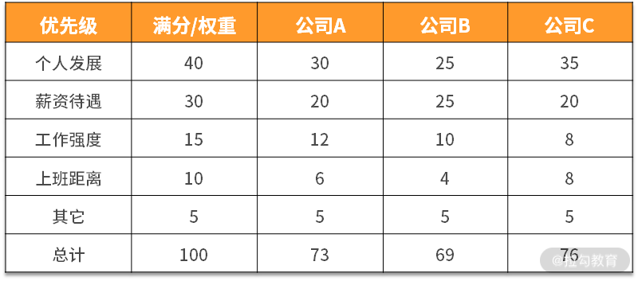

- 00 开篇词 既往不恋，当下不杂，未来不迎.md.html
- 01 微服务架构有哪些特点？.md.html
- 02 微服务架构下的质量挑战.md.html
- 03 微服务架构下的测试策略.md.html
- 04 单元测试：怎样提升最小可测试单元的质量？.md.html
- 05 集成测试：如何进行微服务的集成测试？.md.html
- 06 组件测试：如何保证单服务的质量？.md.html
- 07 契约测试：如何进行消费者驱动的契约测试？.md.html
- 08 端到端测试：站在用户视角验证整个系统.md.html
- 09 微服务架构下的质量保障体系全景概览.md.html
- 10 流程规范篇：高速迭代的研发过程需要怎样的规范？.md.html
- 11 测试技术篇：测试技术这么多，我该如何选型？.md.html
- 12 测试技术篇：如何提升测试效率？.md.html
- 13 测试技术篇：专项测试技术解决了哪些专项问题？.md.html
- 14 CICD 篇：如何更好地利用多个“测试”环境？.md.html
- 15 CICD 篇：如何构建持续交付工具链？.md.html
- 16 度量与运营篇：如何做好质量和效率的度量与运营？.md.html
- 17 度量与运营篇：如何度量与运营效率和价值？.md.html
- 18 组织保障篇：质量是设计出来的.md.html
- 19 软件测试新趋势探讨.md.html
- 20 结束语 QA 如何打造自身的核心竞争力？.md.html
- 捐赠
11 测试技术篇：测试技术这么多，我该如何选型？
在模块一，我讲解了微服务架构下的分层测试策略，提到了五种测试方法和技术。它们可以确保微服务系统的所有层次都被覆盖到，确保测试活动本身全面且有效。除此之外，在测试领域，还有许多不同的技术，但面对繁杂的技术，我们该如何选型呢？
众所周知，技术是为了解决实际的痛点，测试技术也不例外。通常在进行技术选型时，会关注如下几个因素：
- 团队的诉求
- 团队在质量方面遇到了怎样的痛点问题？
- 是个别测试人员遇到的问题还是团队整体的问题？
- 技术的特性
- 基于痛点问题，有哪些可选的测试技术或工具？
- 该测试技术解决了什么问题？它有哪些优势和劣势？
- 技术成熟度是怎样的？如果涉及工具，使用开源工具还是商业工具？
- 落地的成本
- 引入该技术需要怎样的成本？
- 职能分工：该技术的落地需要哪个团队来主导，哪些团队来参与？
- 团队是否具备落地这项技术的能力？
所以说，技术的引入不是一蹴而就的，是一个痛点分析、决策的过程。
常见痛点及选型分析
测试团队通常会遇到如下几个痛点：
- 如何更早地发现问题？
- 如何衡量测试的充分性？
- 测试效果如何评估？
下面我们逐一分析下这些痛点和应对的技术。
（1）如何更早地发现问题？
微服务的分层测试策略中的五种测试方法和技术均属于动态测试技术。动态测试技术是观察程序运行时所表现出来的状态、行为等，通过预期结果和实际结果比对的方式来发现缺陷。虽然都是有效的测试策略，但会存在以下局限性：
- 发现问题的类别——不能发现文档类的问题；
- 发现问题的时机——绝大多数情况下必须等到程序代码实现后才能进行；
- 修复问题的成本——修复问题必须要修改代码，并进行回归验证。
那么，在这种背景下可以引入静态测试技术。
静态测试技术是指不运行被测程序本身，仅通过分析或检查源程序的语法、结构、过程、接口等来检查程序的正确性。对需求规格说明书、软件设计说明书、源程序做结构分析、流程图分析、符号执行来找错。
静态测试技术一般分为两种：人工静态测试技术和自动静态测试技术。常见的人工静态测试有代码走查（Code Review）、各类评审（需求评审、技术方案评审、测试用例评审等）等。常见的自动静态测试有静态代码检查，最常用工具为 Sonar。
Sonar（SonarQube）是一个开源平台，用于管理源代码的质量。Sonar 不只是一个质量数据报告工具，更是代码质量管理平台。支持的语言包括：Java、PHP、C#、C、Cobol、PL/SQL、Flex 等。
在“流程规范篇”中，我们强调过评审环节的重要性，很多时候它们已经融入流程的制定中了。Code Review，也是很多研发团队进行分支管理时的强制流程。虽然它们发现问题的数量和深度依赖人的主观能动性和个人能力，但它们是开展后续工作的必须环节，通过它们可以更加了解系统实现，促进交流和对系统的理解，提升研发人员和测试人员的质量意识。因为流程上已经引入了这些测试，这里就不再赘述。
自动静态方法相较于人工静态方法，有着如下特点：
- 提早发现问题，不实际执行代码，当代码在本地或进行提交时就可以触发静态检查；
- 对代码检查更加严格，检查规则可定制化；
- 基于规则而非业务逻辑检查代码错误；
基于此，静态代码检查可以发现如下问题。
- 变量问题：变量未初始化、变量声明了但并未使用、变量类型不匹配等；
- 冗余代码：重复代码块、僵尸代码；
- 空指针引用；
- 死循环；
- 缓冲区溢出；
- 数组越界。
当然，由于是完全自动的检查，所以存在一定的误报率，需要人工对结果进行标记。
可见，静态代码检查能够以较低的成本自动发现各种语法和控制流方面的问题，所以它在质量保障体系中应用较广，通常也纳入持续集成和持续交付体系中了，后面课程也会提到。
（2）如何衡量测试的充分性？
虽然测试人员在编写测试用例时，会使用各种各样的用例设计方法（白盒测试用例和黑盒测试用例），用例也设计了很多条，但到底应该怎么判断测试过程本身是否充分呢？
这种情况下可以借助测试覆盖率技术。没错，测试覆盖率通常可以用来衡量测试的充分性和完整性，可以从两个层面来看覆盖率。
- 业务层面：主要做法是通过需求文档编写测试用例，再通过多方 review 确保测试用例覆盖了所有业务功能点，因此用例的执行通过率就是功能点的覆盖率。如果所有用例执行通过了，可以认为测试覆盖了 100% 的功能点。
- 代码层面：根据代码层面的测试对象，可以分为覆盖了多少行、路径、方法、类、接口、服务等。
尽管如此，对覆盖率的原理认知不正确，也会导致因使用不当而引发新的问题。
如果代码的覆盖率比较低，大概率是测试不充分导致的，但代码的覆盖率高，却不能证明测试是充分的，原因如下：
- 代码覆盖率的局限性主要是不能发现需求中没有代码实现的部分，因为代码都没有实现，自然执行过程不会覆盖到它。
- 没有进行比较合理、全面的验证，说得极端一点，你蒙上眼睛操作下软件，也会覆盖一部分代码，然而这部分覆盖率没有任何意义。
所以说，代码覆盖率的真正意义是体现已有代码的被执行情况，可以体现一定程度的质量信心，但其首要价值在于识别出那些没有被覆盖的部分，并针对这部分代码进行分析，从而对测试用例进行针对性地补充，或者从中发现冗余代码。
代码覆盖（Code coverage）是软件测试中的一种度量，描述程序中源代码被测试的比例和程度，所得的比例称为代码覆盖率。
（3）测试效果如何评估？
很多时候，一个业务既包含逻辑性的功能，也包含效果类的功能。效果类功能（如搜索引擎、导航、信息推荐等）的一大特点是你不能快速地判断出对或错，只能感性地识别是否体验好。这样的系统或产品常见的痛点是线上有很多 badcase，修复了这个 badcase，可能会导致一些新的 badcase，那么怎样较为全面地评估好坏呢？
对于测试团队来说，可以针对效果类功能建立起相应的评测机制。为了尽可能形象，这里我用一个找工作的例子来说明。
在换工作时通常会出现这样的情况：有不止一份工作机会，但也没有哪份工作有着特别明显的优势能够让你快速做出判断。出现这种情况时比较愁人，虽然最终还是在艰难中做出了选择，但更好的方式是建立起对工作机会打分的判断逻辑，大体步骤如下：
1.列举出你选择工作岗位时最看重的几个特征，比如是个人发展、工作强度、上班距离、薪资待遇和其他。 2.对上述特征进行权重设置，使其总分为100，比如权重设置如下：

3.把你候选的工作，按上述特征进行打分，并计算最终得分。比如，个人发展特征的满分是40，这三家公司在个人发展方面的优势差异明显，公司C>公司A>公司B，最终各项得分如下，其他特征也依次打分：

4.通过上述你就可以知道这三份工作最终的得分情况。
由上可知，通过评测打分机制，要比你完全不进行量化更容易做决策。其中，对一家工作关注的指标和权重可以随着你职业发展的阶段进行调整，比如有的测试人员找工作时只看个人发展，其他都是浮云，那么就可以把特征设置为“个人发展+其他”，个人发展的权重可以设置为一个比较大的值，比如 90，其他的权重为 10。如果还会考虑其他特征，也可以补充进去并设置权重，所以，这个评测逻辑可以做到以不变应万变。
从找工作的例子中可以做下“映射”，在建设评测机制时，可以进行如下步骤。
- 指标选择：梳理出当前评测功能的效果衡量属性，属性需要可量化。
- 权重设置：对衡量属性进行权重设置。
- 指标打分：选取足够的数据量触发功能效果，再对衡量属性进行打分。
- 效果输出：计算得出总分，从而知道被测对象或系统的“效果值”。
通常情况下，建立效果评测机制的任何一步都要比找工作更加复杂（指标需要更多维、数据量更全面、更多样化），这个过程中需不断地跟产品经理、研发人员进行讨论，最终确定下来多方共识的衡量机制。
在实际的项目过程中，针对效果类功能，还可以进行 A/B 测试，但一般情况下， A/B 测试由研发人员来主导进行，测试人员较少能够参与到其中，这里不再赘述。
A/B测试是为 Web 或 App 界面或流程制作两个（A/B）或多个（A/B/n）版本，在同一时间维度，分别让组成成分相同（相似）的访客群组（目标人群）随机的访问这些版本，收集各群组的用户体验数据和业务数据，最后分析、评估出最好版本，正式采用。 A/B 测试，用于验证用户体验、市场推广等是否正确，而一般的工程测试主要用于验证软硬件是否符合设计预期。
当然，测试的痛点不限于此，测试技术也不限于此，但对技术的选型逻辑却大同小异，下面给出我在这方面的认知和理解。
对技术选型的认知
技术选型的本质是问题与解的匹配：先有痛点问题，再有大致的技术解决思路，最后是进行选型分析和决策。其中痛点问题通常伴随着业务和团队的发展而持续存在的，这其中的关键环节是如何知道大致的技术解决思路。这就需要具备一定的技术视野，说白了就是要在技术上“见多识广”，这就需要我们自身不断学习，打破思维的边界、拓宽自己的眼界。
同时需要注意的是，没有完美的测试技术，随着业务和团队的发展，需要根据成本、技术的成熟度、工具及其适用性进行选择。
你所负责的项目或业务，使用了哪些测试技术呢？在测试技术选型时又有哪些取舍呢？请写在留言区。同时欢迎你能把这篇文章分享给你的同学、朋友和同事，只有分享交流才会一起进步。
相关链接： https://www.infoq.com/articles/twelve-testing-techniques-microservices-tradeoffs/ https://tsh.io/blog/testing-microservices-strategy-and-tools/ 《全程软件测试》 朱少民 著 https://insights.thoughtworks.cn/test-matrix/ Sonar： https://www.sonarqube.org/ 代码覆盖率： https://en.wikipedia.org/wiki/Code_coverage https://insights.thoughtworks.cn/code-coverage/ https://insights.thoughtworks.cn/code-coverage-vs-test-coverage/ https://docs.microsoft.com/zh-cn/visualstudio/test/using-code-coverage-to-determine-how-much-code-is-being-tested?view=vs-2019
© 2019 - 2023 Liangliang Lee. Powered by gin and hexo-theme-book.